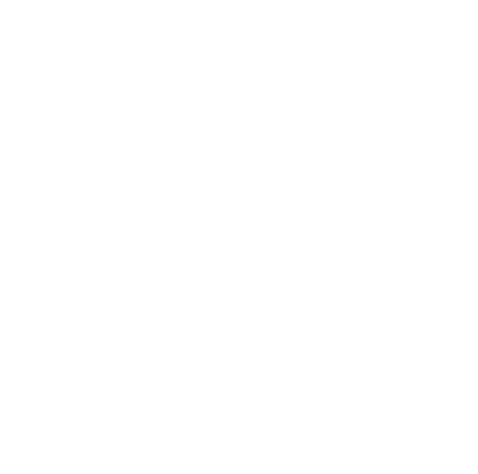
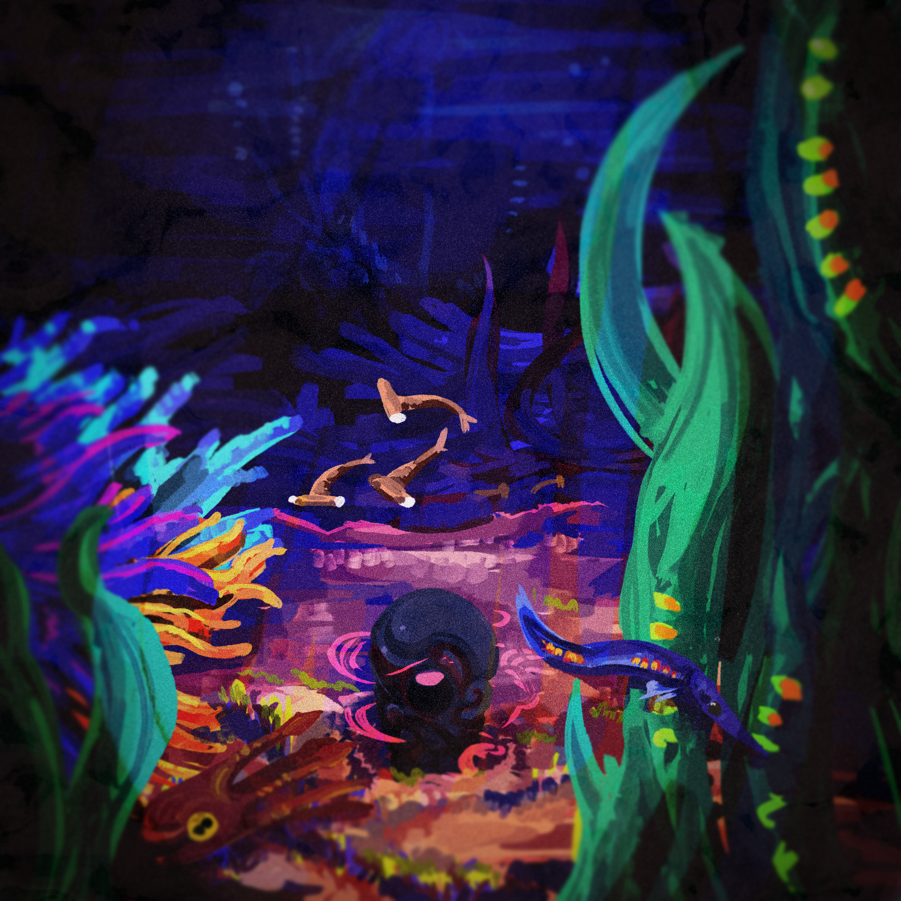
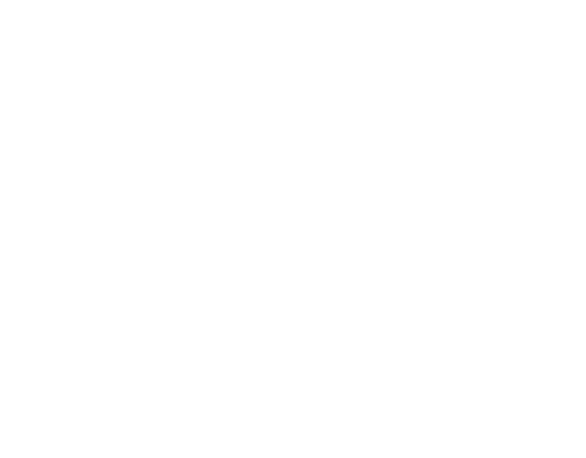

VISIONS OF A SEA
"An arm was recovered after the rain had ceased. The bite marks did not resemble any known animal."

BASIC INFO
Threshold Consciousnesses: Lisokoya
Dreamer Classification: (E1)1-21-1
Hazard Type: Physio-psychological
Failure Types: Ejection, Lost
VERTICE CLUSTER

CONTAINMENT GUIDELINES
GUIDELINE I: Psychological screening must be done prior to working on (E1)1-21-1.
GUIDELINE II: Nothing occurred when employees exited (E1)1-21-1's containment chamber before 5 minutes had elapsed.
GUIDELINE III: After 5 minutes had elapsed, employees found it difficult to leave (E1)1-21-1's containment chamber, claiming to be "soothed by the sea".
GUIDELINE IV: All employees should be forcefully pulled out of (E1)1-21-1's containment chamber after 6 minutes have elapsed. Exceeding 12 minutes risks employee death.
REPLICATION TIPS
TIP I: From the height of the cliff, watch the calm waves below. You must not think about the real world, think only of the beautiful sea.
TIP II: Discard any thoughts about going back. It is best to think about the woes of the real world so that you are motivated to stay here forever.
TIP III: Even as the cliff below you erodes and crumbles, be not afraid. Even as you fall deep into a dark, watery abyss, do not swim up. Even as water fills your lungs, do not try to scream as you have already achieved replication.
ESCAPE INFORMATION
Non-escaping entity.
DREAMING ALTERATION 
Seabed [Back]
Obtain Rate: Survive an encounter with the R3 “Grand Serpent” for 1 minute. Then, successfully replicate.
Variant Dreaming: Uniform only, oriented towards physical defence.
Variant Waking: Able to stay in (E1)1-21-1’s containment chamber for an additional 2 minutes with no negative consequences.
RESEARCH STATUS
Observations deemed insufficient. Further testing reserved for Level 2 employees and above.
BLACK PROJECTS
Seabed Source: Proposal to harvest (E1)1-21-1's fauna for the luxury consumer market.
Status: Rejected
“Attempts to remove (E1)1-21-1’s fauna have repeatedly failed. It appears communication between departments is severely lacking in some aspects if this was a serious proposal.”
- R&D Overseer Satariel